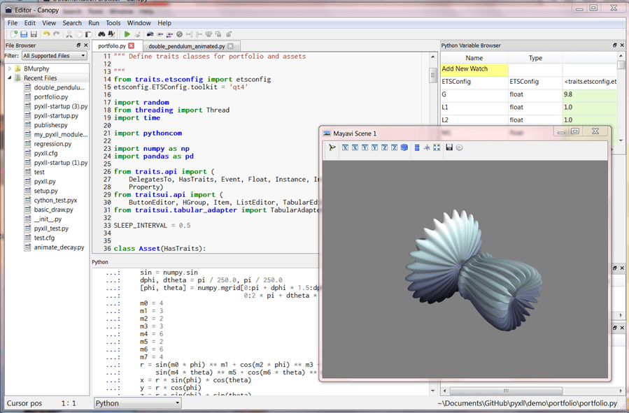

常见编辑器和 IDE
下面介绍常见的编辑器和 IDE：
编辑器 vs IDE
- 编辑器
- 跨平台
VSCode=VS Code=Visual Studio CodeSublime=Sublime TextAtomGEdit
- Linux类
vi- 增强版：
vim
- 增强版：
EmacsGEdit
- Mac
文本编辑TextMate
- Windows
NotepadNotepad++Notepad2EditPlusSlickEdit- 专门的：
- Python
IDLE
- Python
Source Insight
- 跨平台
- IDE
- 跨平台
- Eclipse
JetBrains公司
- IntelliJ IDEA：for Java
- 最大优点：智能提示和自动完成，重构
- 最大缺点：比较耗资源
- 其他基于 IDEA 的 IDE
- JetBrains 公司自己的
Google的：Android Studio：for Android
- Aptana Studio
- Mac
Xcode：for Mac 的所有平台微信开发者工具：for 微信小程序- 旧称：
微信web开发者工具
- 旧称：
HBuilder
- Windows
VS=Visual StudioC#
- 跨平台
IDE分类
根据语言分
- Python
PyCharmEclipse+PyDevSpyderPyScripterWingIDEEnthought Canopy- 简介：面向科学家 和工程师的 Python IDE，它预装了为数据分析而用的库
- 主页：https://assets.enthought.com/downloads/
- 截图：
- 
KomodoEric
- Java
NetBeansJCreator
- C#
Visual Studio
- PHP
PhpStorm
- Android
Android Studio
- 微信小程序
微信开发者工具
根据主要适用领域
- Web领域
- Dreamweaver
- WebStrom
- Aptana Studio
- HBuilder
- Brackets
是否支持云端
- 云端IDE = Web端IDE
- Web版VSCode
- Gitee IDE
- 特点
- 基于微软的 Monaco Editor
- 特点
- CodeSandbox
- 主要用于：Web前端